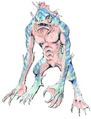

Grandia II: GUIDE

1. Главные персонажи игры
2. Ролевая система
3. Система боя
4. Описание некоторых предметов
Глава I
1. Witt Forest
2. Carbo Village
3. The Black Forest
4. Garmia Tower
5. Carbo Village (2nd visit)
6. Inor Mountains
7. Agear Town
8. Durham Cave & Agear Town (2nd visit)
9. Baked Plains
10. Liligue City
11. Liligue Cave
12. Liligue City (2nd visit) & Skyway
13. Lumir Forest
14. Mirumu Village
15. Mysterious Fissure
16. Mirumu Village (2nd visit)
17. Aira's Space
18. St. Heim Mountains
19. St. Heim Papal State
20. St. Heim Mountains Pilgrim Road
21. Raul Hills
22. Cyrum Kingdom
23. Cyrum Castle Secret Passage & Cyrum Castle
24. Underground Plant
25. Cyrum Kingdom (2nd visit)
26. The 50/50 and Ceceile Reef
Глава II
27. Garlan Village
28. Grail Mountain
29. Garlan Village (2nd visit)
30. Ghoss Forest West
31. Nanan Village
32. Ghoss Forest East
33. The Great Rift
34. Demon's Law
35. Valmar's Body
36. St. Heim Papal State (2nd visit)
37. Valmar's Moon
38. Cyrum Kingdom (3rd visit)
39. *2S* RAUL HILLS SPECIAL STAGE
40. Cyrum Kingdom South & Birthplace of the Gods
41. New Valmar
42. New Valmar Room of Chaos